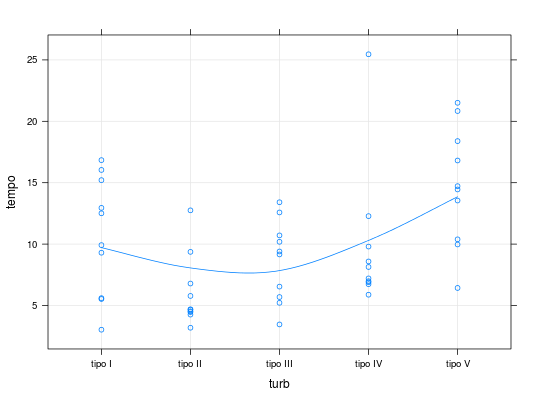
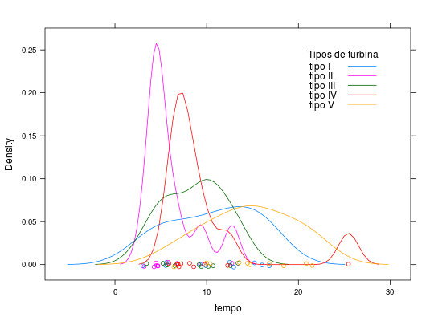

Resultados de um experimento conduzido para avaliar o desempenho de cinco tipos de turbina de alta velocidade para motores de avião. Foram considerados dez motores de cada tipo registrando-se o tempo até a perda de velocidade ou, equivalentemente, a duração do motor.
Um data.frame com 50 observações e 2 variáveis.
turbtempoPAULA (2004), Tabela 2.1, pág. 121.
Lawless, J. F. (1982). Statistical Models and Methods for Lifetime Data. John Wiley, New York.
data(PaulaTb2.1)#> Warning: data set ‘PaulaTb2.1’ not foundstr(PaulaTb2.1)#> 'data.frame': 50 obs. of 2 variables: #> $ turb : Factor w/ 5 levels "tipo I","tipo II",..: 1 1 1 1 1 1 1 1 1 1 ... #> $ tempo: num 3.03 5.53 5.6 9.3 9.92 ...# Dados no formato "largo", conforme tabela 2.1 (Paula, 2004) unstack(PaulaTb2.1, tempo ~ turb)#> tipo.I tipo.II tipo.III tipo.IV tipo.V #> 1 3.03 3.19 3.46 5.88 6.43 #> 2 5.53 4.26 5.22 6.74 9.97 #> 3 5.60 4.47 5.69 6.90 10.39 #> 4 9.30 4.53 6.54 6.98 13.55 #> 5 9.92 4.67 9.16 7.21 14.45 #> 6 12.51 4.69 9.40 8.14 14.72 #> 7 12.95 5.78 10.19 8.59 16.81 #> 8 15.21 6.79 10.71 9.80 18.39 #> 9 16.04 9.37 12.58 12.28 20.84 #> 10 16.84 12.75 13.41 25.46 21.51aggregate(tempo ~ turb, summary, data = PaulaTb2.1)#> turb tempo.Min. tempo.1st Qu. tempo.Median tempo.Mean tempo.3rd Qu. #> 1 tipo I 3.030 6.525 11.220 10.690 14.640 #> 2 tipo II 3.190 4.485 4.680 6.050 6.538 #> 3 tipo III 3.460 5.902 9.280 8.636 10.580 #> 4 tipo IV 5.880 6.920 7.675 9.798 9.498 #> 5 tipo V 6.430 11.180 14.580 14.710 18.000 #> tempo.Max. #> 1 16.840 #> 2 12.750 #> 3 13.410 #> 4 25.460 #> 5 21.510library(lattice) xyplot(tempo ~ turb, data = PaulaTb2.1, type = c("p", "g", "smooth"))densityplot(~tempo, groups = turb, data = PaulaTb2.1, auto.key = list(corner = c(0.9, 0.9), title = "Tipos de turbina", cex.title = 1))